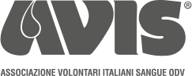
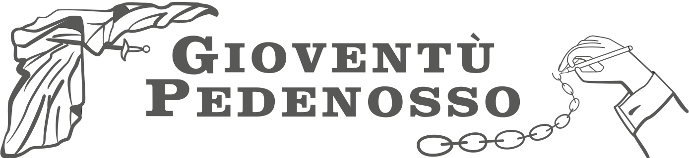
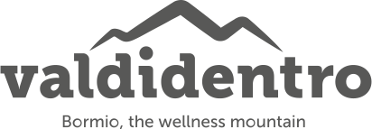
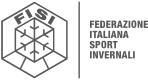

-
2021-OggiAVIS Comunale di BormioMembro del Consiglio Direttivo
AVIS è l'associazione di donatori di sangue più importante d'Italia. La nostra sezione conta oltre 100 volontari. Il nostro compito è quello di garantire il fabbisogno di sangue del Sistema Sanitario.
-
2018-2022Gioventù Pedenosso APSPresidente
Si tratta di una tradizionale associazione di volontariato risalente ufficialmente al 1935, ma che affonda le sue radici nel medioevo. Per definizione è composta soltanto da giovani volontari.
-
2018-TodayValdidentro TourismFotografo
Dal 2018 sono il fotografo ufficiale della magggioranza degli eventi organizzati dalla locale associazione di promozione turistica.
-
12/2021 | 12/2022FISI | Bormio FIS Ski World CupUfficio Accrediti
Coordinazione di tutti gli aspetti che riguardano il processo di accredito per lo staff e le squadre nazionali alla Bormio FIS Ski World Cup.